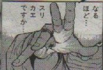
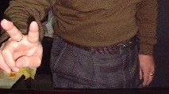

世界に誇る麻雀文学と言えば、もちろん「麻雀放浪記」、その“激闘編”に、こんなくだりがある。
安さんの中指に太い指輪が光っている。よく見ると左手ばかりじゃなく、右手にもだ。
「いい指輪だね」
「かみさんの形見だ。こうみえてもホワイトゴールドさ。何万チョって奴だ」
「麻雀用じゃないのかい」
「う？、何故だい」
「さっきハンドルを握っててたときは、たしか、してなかった」
「うん、指がかったるくなるからな。サポーター代わりだ」
〜
それが威力を増したのは、指輪が利用されるようになって以来である。中指、あるいは薬指に指輪をはめて、指のつけ根の肉と指輪の間に牌をはさみこむようにして持つのである。
こうして吊り持てば、掌をまっすぐにしていても、その下に牌を忍ばせていられる。
むかしから指輪とイカサマの関係が話に出ることはあったが、これですっかり有名になった。以来、顔見知り同士の対局では、指輪をしている相手が大物手をアガったりすると、「さすがは指輪の威力」というような突っ込みがよく入った。
しかしσ（-_-）の経験（？）から言うと、吊り込みにそれほど指輪が役にたつとは思えない....それでも麻雀放浪記のおかげで（？）、指輪とイカサマの関係は切っても切れない仲と思われているようだ。
たしかにやり方は人様ざまだから、じっさいに指輪を重宝にしていた人がいたのかも知れない。しかしそれが中指というのはちと疑問。牌をツモるとき、中指は親指・人差指とともに曲げたり伸ばしたりする。このとき中指の付け根に牌があると、すごく不自由。そこで吊るなら薬指の根元が良い（ような気がする....）。
今月の近代麻雀（'02.5.1号）の「騙し屋（作画・旭凛太郎/原作・花村奇跡）」というコミックに、敵役の宝石商が巻き返しを図ろうとして吊り込みをするシーンがある。そのカットでは指輪が薬指にあり、σ（-_-）としては非常になっとく出来る描き方となっている。(^＿^；

それはいいけれど、それでも主人公にやられた敵役が、今度はすべての指に指輪をはめて大技を決めようとするシーンがある。しかしいくら指輪が役に立つといっても、ここまで露骨ではさすがにバレバレのような。（^-^；
ま、それはいいとして、いずれにしても結婚指輪などは左手の薬指ということになっている。そこで、いかに男性が指輪をしていてもおかしくない時代と言っても、両手の中指に一つづつというのは、とても不自然。男がそんな指輪をしていたら、疑われても仕方がない？。ところが実は、σ(-_-)は両手の中指に指輪をしている....(-＿-；

そっちのコラムにも書いてあるが、これは決してツリコミ用の指輪ではない。一つは結婚指輪で、もう一つは親父の形見。結婚指輪を中指にしているのは、作るときに寸法を間違えたので、薬指だと抜けてしまうため。親父の形見も、やはり右手中指がちょうどいいサイズだったというだけの話だ。
それでも麻雀放浪記の描写とあまりにもぴったり符号するので、これまでずいぶん疑われた。な〜に、そんなに指輪が役に立っているなら、いまごろ麻雀でメシ食ってらぁ。（笑）
|